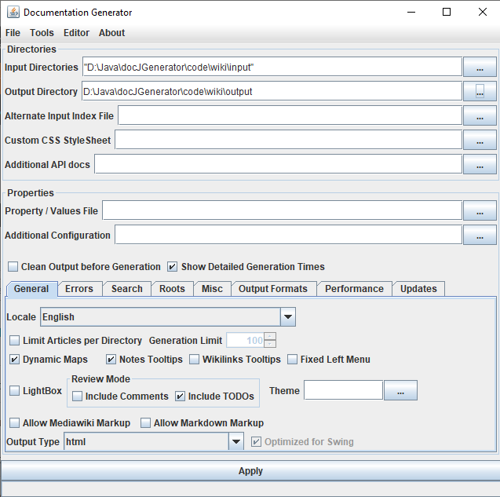
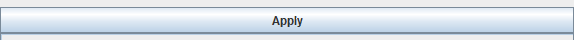
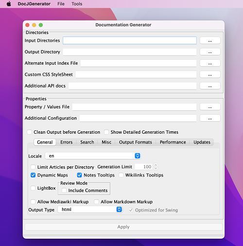

Home
Categories
Dictionary
Download
Project Details
Changes Log
What Links Here
How To
Syntax
FAQ
License
GUI interface
1 Opening the GUI
2 Configuration
3 Minimal configuration
4 Generating the wiki
5 Generation options
6 Editor
7 Tools
8 Usage on Mac OS X
9 See also
2 Configuration
3 Minimal configuration
4 Generating the wiki
5 Generation options
6 Editor
7 Tools
8 Usage on Mac OS X
9 See also
Double clicking on the Jar file of the application without specifying any command-line parameter will open the GUI of the application.

If you double-click on the
You need to configure the
To be able to generate the wiki, you only need at the minimum to specify:
Depending on the size of the wiki, you may see the progress bar status during the generation at the bottom of the GUI:

The GUI panel has several tabs for configuring the generation:
You can edit the wiki using any source editor (or even text editor), but the tool provides an associated editor to edit the wiki.
To open the editor, you need to define at least the inputs of the wiki, you can call the editor by using the Editor => Open Editor menu:
 .
.
The "Tools" menu allows to:

Opening the GUI
Main Article: Opening the GUI
If you double-click on the
launcher.jar jar file in the install directory, you will open the GUI interface and the Editor will be available.You need to configure the
docgenerator.conf file in the same directory. This is a properties file containing two properties:-
JAVAHOME: the path of the JAVA_HOME directory. If you don't specify the path or it is empty, the default JRE location will be used -
JAVAFXLIB: the path of the JavaFX library. If the JRE is less than Java 11, this will not be used because before Java 11, JavaFX is bundled with the JRE installation
Configuration
Many of the configuration properties wich are available through the command-line or the configuration file can be specified directly through the GUI. Additionally:- Named properties can be set through the "Property / Values" file parameter
- Additional configuration properties can be set through the "Additional Configuration" file parameter
Minimal configuration
Main Article: Basic usage
To be able to generate the wiki, you only need at the minimum to specify:
- The input directory
- The output directory

Generating the wiki
You generate the wiki by clicking on the "Apply" button. It will produce a html site as an offline wiki-like site in the output directory.
Depending on the size of the wiki, you may see the progress bar status during the generation at the bottom of the GUI:
Generation options
Main Article: GUI Generation options
The GUI panel has several tabs for configuring the generation:
- General properties
- Errors: used to specify how parsing errors are handled
- Search: used for the search configuration
- Misc: Miscellanous parameters
- Output formats: used to specify and configure the output formats of the generator
- Performance: used to tweak the performance of the generation
- Updates: used for the incremental generation
Editor
Main Article: Editor
You can edit the wiki using any source editor (or even text editor), but the tool provides an associated editor to edit the wiki.
To open the editor, you need to define at least the inputs of the wiki, you can call the editor by using the Editor => Open Editor menu:
.
Tools
Main Article: GUI tools
The "Tools" menu allows to:
- serialize a configuration file with the current state of the GUI options
- Unserialize a configuration file and update the state of the GUI options
- Reset the state of the GUI options to their default values
Usage on Mac OS X
The tool GUI integration on Mac OS X includes:- The menus are at the top of the screen
- The UI is the Mac OS X UI
- The name of the application is correct

See also
- Command-line starting: This article is about how to execute the application by the command-line without showing the UI
- Configuration file: It is possible to define an optional property / value configuration file when starting the application (using the graphical UI or the command line)
- Configuration: This article explains how to configure the tool
- Basic usage: This article presents the basic usage and configuration of the tool
×

Categories: General | Gui